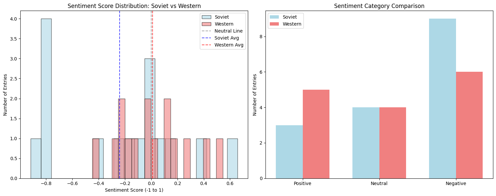
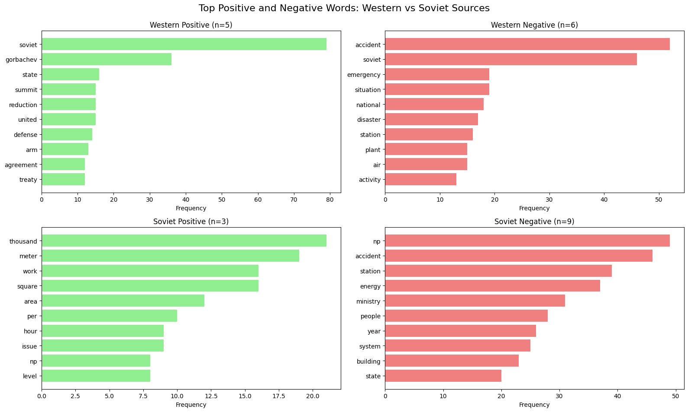
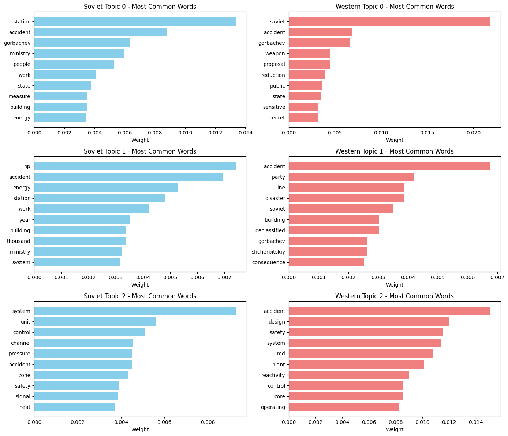
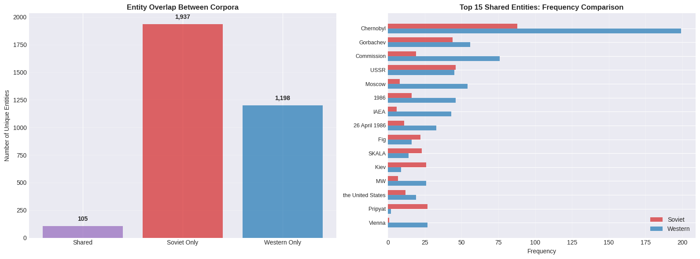

Research Question
How did Soviet and Western government communications about the Chernobyl nuclear accident differ from each other in their language, tone, and framing?
Background: In April 1986, the Chernobyl disaster became one of the worst nuclear accidents in history. For this project, we took the data analysis methods we learned throughout the semester and used them to examine how Soviet and Western governments differed in their descriptions of the Chernobyl nuclear explosion. In an earlier assignment, Evan examined topics and sentiments regarding Rotten Tomatoes reviews of the Chernobyl miniseries. He hypothesized that the reviews would contain references to the facade of lies and deceit that the Soviet regime employed to cover up the accident. Unable to confirm his hypothesis, whether it was invalid or out of scope of the data, he wanted to dive deeper. The obvious next course of action was to examine real data of correspondence regarding the event to see how that compares. This is where our final project begins.
The Evolution of Our Question: Initially, we thought that examining Soviet and Western news agencies would be the best course of action to see the difference in perception and language. However, we ran into one critical issue: the Soviet Union's lack of public information. This in itself, funny enough, provides somewhat of an answer to our hypothesis. There were almost no accessible news articles, TV broadcasts, or correspondence from anyone except official Soviet government agencies. The data was, and still is, on lockdown. The few articles we were able to find didn't include valuable information about the event and were in Russian.
Luckily, we were able to find a National Security Archive collection of documents regarding the event. The documents were written between multiple government entities and leaders, and upon initial glance, appeared to be exactly what we were looking for. We decided this would actually be a much better course of action. Official government documents would give us a behind-the-scenes look at how leadership on each side was framing the disaster, rather than what the public was hearing through news outlets.
Our Hypothesis: We predicted that Soviet government correspondence would carry a much more positive sentiment about the event. The documents would presumably make the event seem much more under control, better handled, and downplay the severity of it. We thought there would likely be topics focused on the heroism of party members while heavily blaming those responsible. On the other hand, Western sources would presumably hold a more negative view of the event, highlighting the severity, poor management, and worldwide impact.
Data & Methods
Dataset
Data Source: Most of our data came from the National Security Archive's Chernobyl collection, which provided declassified government documents from both Soviet and Western sources. We had 16 Soviet documents and 15 Western documents, ranging from short memos to lengthy analytical reports. In total, we analyzed tens of thousands of words of internal government communications from each side.
The Significance of What We Couldn't Find: The data collection process itself revealed something significant. We originally wanted to analyze Soviet news articles and public broadcasts, but that material basically doesn't exist in accessible form. The Soviet government locked down public information about Chernobyl so tightly that we could only find official government correspondence. This absence of data is, funny enough, part of our answer. The documents we did find were internal communications, Politburo session notes (formal meetings of Soviet leadership), diplomatic cables, and technical reports. Not materials intended for public consumption.
Collection Method: For each document, we manually downloaded them and converted them to text files to work with them more easily. All documents are declassified government records that are publicly available through the National Security Archive.
Ethical Considerations: Since these are 35+ year-old official communications that have been released to the public, there weren't privacy concerns. We tried to analyze both sides fairly and in their proper historical context.
Analysis Methods
Tools: Python with pandas, NLTK, VADER, Gensim, and spaCy libraries
- Term Frequency Analysis: We looked at which words appeared most often after removing stopwords. This helped us see what each government actually focused on in their internal discussions beyond just the basic facts of the accident.
- Sentiment Analysis (VADER): VADER gives scores from -1 (very negative) to +1 (very positive). We ran this on every document to see if Soviet internal communications really did frame things more positively, even when talking amongst themselves.
- Topic Modeling (Gensim LDA): We used Gensim's LDA algorithm to identify 3 main topics in each dataset. This revealed what themes each government emphasized in their internal discussions, whether it was technical details, political concerns, human impact, etc.
- Named Entity Recognition (spaCy) - Experimental Method: Here's where things got interesting. After running our base analyses, we wanted an additional method but weren't sure what would be most useful. We decided to try something experimental: we asked ChatGPT what additional analysis might reveal insights given our research question and dataset. It suggested named entity extraction to see what specific people, places, and organizations each side focused on. ChatGPT then wrote the entire entity analysis code using spaCy's named entity recognition. We ran it to see what would happen.
Limitations
The limitations of our approach became clear pretty quickly. VADER is trained on modern English social media text, not Cold War diplomatic language or translated Soviet documents. Some Soviet documents appeared to be translated from Russian, which definitely affected sentiment scoring. Our sample size was small, just 31 documents total, and we treated them as one corpus rather than tracking changes over time. The entity analysis, while generating lots of data, may not have provided the most meaningful insights since it was AI-generated rather than designed by us based on domain knowledge.
One major challenge: document types varied widely. We had everything from personal diary entries to technical reactor reports to diplomatic cables. This probably affected our results, but we didn't have enough documents to separate by type and still get meaningful patterns.
Results & Analysis
Term Frequency Results
The most common words after preprocessing revealed interesting patterns in how each government discussed Chernobyl internally.
Soviet documents emphasized technical and operational language
Western documents focused on design analysis and Soviet actions
Soviet documents frequently used words like "system," "unit," "control," "energy," and "station." Very technical and operational language. Western documents had words like "accident," "safety," "design," "soviet," and "reactivity" appearing more often. What stood out was that Soviet internal communications emphasized organizational response and technical details, while Western internal communications focused more on analyzing Soviet actions and investigating design flaws from an external perspective.
Sentiment Analysis Results
This is where our hypothesis got completely turned on its head.
Our data revealed something we absolutely did not expect: The Soviet government documents were significantly more negative than Western ones. Soviet documents averaged a sentiment score of -0.240, with 56.2% classified as negative, while Western documents averaged 0.011 (essentially neutral) with only 40% negative. This directly contradicts our hypothesis that Soviets would present a more positive facade.
But here's the thing. These were internal government communications, not public statements. When we looked at the most negative Soviet documents, they were Politburo session notes and internal reports with sentiment scores as low as -0.917. Documents like the diary of Vitaly Vorotnikov, an extremely high-ranking Soviet official, and internal commission reports were brutally honest about the disaster. They talked openly about ministry failures and crisis management. The Soviet government wasn't sugarcoating things internally at all.
The Western documents told a different story. The most positive Western entries focused heavily on Gorbachev (mentioned 36 times in positive documents) and diplomatic opportunities, with words like "summit," "reduction," "arms," "treaty," and "agreement" dominating. Western sources seemed almost excited about the political openings the disaster created, particularly around arms control negotiations. This wasn't what we expected either.
Topic Modeling Results
We trained LDA models with 3 topics for each dataset. The topics show fundamentally different internal priorities:
Soviet Internal Topics:
- Topic 0: Political/leadership-focused (station, accident, Gorbachev, ministry, people, work, state, measure)
- Topic 1: Operational/bureaucratic (accident, energy, station, work, year, building, thousand, ministry, system)
- Topic 2: Purely technical (system, unit, control, channel, pressure, accident, zone, safety, signal, heat)
Western Internal Topics:
- Topic 0: Geopolitical concerns (soviet, accident, Gorbachev, weapon, proposal, reduction, public, state, sensitive, secret)
- Topic 1: Consequence analysis (accident, party, line, disaster, soviet, building, declassified, consequence)
- Topic 2: Technical investigation (accident, design, safety, system, rod, plant, reactivity, control, core, operating)
Soviet internal discussions organized around their own response efforts: political leadership, operational management, and technical details. Western internal discussions organized around analyzing the Soviets, assessing consequences, and investigating design failures. Both sides discussed the accident, but from completely different angles. It's like two governments looking at the same disaster through entirely different lenses.
Entity Analysis
The experimental entity analysis produced an unexpected result worth noting:
There was only 3.2% entity overlap between the two datasets. Out of over 2,000 unique entities identified, only 105 were shared. Soviet documents mentioned internal bureaucratic entities like AES, NPS, RP, SKALA, TVS, and OLB. Most of which meant nothing to us or to Western audiences. Western documents focused on international organizations (IAEA, Commission), locations (Vienna, Moscow), and investigative procedures. They were literally talking about different aspects of the same event.

One interesting pattern from the entity density analysis: in Soviet documents, higher entity density (more specific names and organizations mentioned per 1,000 characters) correlated with more negative sentiment (correlation of -0.518). Documents that got specific about who was involved and what failed were more negative. This suggests that specificity enabled accountability and blame, which drove negative tone. Western documents showed almost no correlation between entity density and sentiment.
Key Findings
After running all our analyses, three major insights emerged:
- A Dual Narrative: Soviet internal communications were brutally honest and negative (averaging -0.240), while public information was virtually nonexistent. This wasn't the simple propaganda story we expected. Even behind closed doors, even in Politburo sessions, Soviet officials used negative language about ministry failures and crisis management. But externally? Complete silence to citizens and the world. The facade wasn't positive spin. It was absence. The real Soviet strategy was controlling information through silence rather than through positive messaging.
- Western Sources Weren't Completely Critical: Western documents averaged nearly neutral (0.011) and showed surprising positivity when discussing Gorbachev and diplomatic opportunities. The most positive Western entries focused heavily on arms control negotiations, summits, and political openings. Chernobyl wasn't just a nuclear disaster to Western governments. It was a strategic moment in Cold War relations. Some documents acknowledged Soviet response efforts and discussed opportunities for cooperation.
- Fundamentally Different Perspectives: Soviet internal discussions focused inward on their own response, organization, and management of the crisis. Western internal discussions focused outward on analyzing Soviet behavior and considering strategic implications. The 3.2% entity overlap quantifies this: they were having completely different conversations about different actors and different aspects of the same event. Soviet documents were about "what we are doing," while Western documents were about "what they are doing."
What Surprised Us
We expected public-facing Soviet propaganda to be positive, but we were genuinely surprised that internal Politburo communications were so negative. We thought internal documents would acknowledge problems but maintain some positive framing. They didn't. Documents like Vorotnikov's diary and internal commission reports were shockingly candid about failures and severity.
Another surprise: Western sentiment wasn't uniformly negative. The focus on Gorbachev and arms control in positive documents revealed that Western governments saw opportunity alongside disaster. This wasn't just "the Soviets messed up." There was strategic calculation about what this meant for broader U.S.-Soviet relations.
The biggest surprise was realizing our hypothesis about Soviet deception might still be valid, but we chose the wrong data to test it. We found internal honesty when we expected internal spin. The real finding was what we couldn't find: the absence of public information that forced us to change our research question in the first place.
Critical Reflection
This project showed us what happens when computational methods challenge your assumptions. We expected to find Soviet whitewashing and found internal honesty instead. We expected Western criticism and found diplomatic optimism about Gorbachev instead. The data didn't confirm our hypothesis. It complicated it.
Integration of Methods
What computational methods revealed: The algorithms processed all 31 documents and tens of thousands of words to find patterns we couldn't have caught by reading alone. Sentiment analysis gave us numerical evidence that Soviet internal communications maintained more negative framing than Western ones. The opposite of what we predicted. Topic modeling revealed the structural difference between inward-focused Soviet discussions and outward-focused Western discussions. The entity overlap analysis quantified just how differently the two sides were talking about the same event. Without these tools, we might have had impressions but no evidence.
What close reading added: But the numbers needed context. When VADER scored Soviet Politburo notes as negative, we had to read them to understand the negativity came from honest assessments of failures, not panic or despair. When Western documents came up with positive scores, we had to understand it was strategic optimism about diplomatic opportunities, not approval of the disaster. The algorithms found patterns. We explained what they meant.
Combining both approaches was essential. Computational methods found measurable differences. Historical knowledge explained why those differences mattered.
Algorithms Exposing Government Language
When VADER classified Soviet documents as more negative, it detected linguistic choices Soviet officials made even in internal communications. This reveals something about Soviet bureaucratic culture. The honesty extended into how they talked amongst themselves about failures and severity.
Critical question: VADER was trained on modern English. Can it really understand Soviet bureaucratic language translated from Russian? Some "negative" phrasing might have had different connotations in Soviet government speak that we're missing. Translation artifacts could be skewing our results in ways we can't fully account for.
Limitations & What We'd Do Differently
The computational methods also had serious limitations. VADER's sentiment scores felt arbitrary sometimes, calling documents "neutral" that clearly expressed concern or urgency. Can a tool trained on modern English really understand Soviet bureaucratic language translated from Russian? Some "positive" phrasing might have had different connotations in Soviet government speak that we're missing.
The AI-generated entity analysis produced correlation coefficients and density statistics that may or may not mean anything. We threw a method at our data without fully understanding if it was the right tool. While it revealed the striking 3.2% overlap finding, we're not entirely confident in all its interpretations.
What Algorithms Can and Can't Do
It's tempting to say "the algorithm discovered" these patterns. But really, we made every choice: which documents, which methods, which parameters. The algorithm calculated based on our decisions. The insights came from us interpreting calculations, not from the algorithm itself.
This matters for understanding what computational analysis actually is. A powerful tool for finding patterns, but it requires human judgment to make those patterns meaningful. Different choices would have shown different patterns. The algorithm didn't "find" anything. We used it to measure specific things we chose to look for.
If we could redo this project, we'd adjust our scope. Maybe examine Soviet internal documents versus Soviet public statements, if we could find the public materials. Or compare Western diplomatic cables versus Western news coverage. Comparing two governments' internal communications meant we were looking at two different purposes and audiences.
We'd also experiment with different numbers of topics in LDA. We chose 3 somewhat arbitrarily, and 4 or 5 might reveal more nuance. We'd try to get more documents from the same timeframe. Our documents span several months and the conversations probably evolved. Comparing early documents (first few days) with later ones might show if framing changed over time.
Confidence in Our Conclusions
We're confident in our main finding: Soviet internal communications were more negative than Western ones, which contradicts expectations of Soviet spin even in private. The data clearly supports this. We're less confident about interpreting every topic perfectly since topic modeling has ambiguity.
Keep in mind: We're working with translated Soviet documents in many cases. Translation affects word choice and sentiment scoring. Some differences might be translation artifacts rather than original framing differences. We can't be certain how much our findings reflect actual Soviet communication versus translation choices.
Final Thoughts
This project taught us that combining coding with historical analysis creates insights neither could achieve alone. Computational methods revealed measurable patterns in how two governments discussed the same crisis internally. Historical understanding explained why those patterns emerged and what they meant for Cold War politics.
The biggest lesson: being surprised by data isn't failure. It's learning. Even internal government communications reflect ideological framing. Soviet officials were brutally honest in Politburo sessions about the severity and failures. Western officials framed Chernobyl partly through strategic Cold War concerns about arms control and Gorbachev's reforms. Both governments viewed the disaster through their existing frameworks, just not in the ways we predicted.
Sometimes what you can't find tells you more than what you can. The absence of Soviet public information, the thing that forced us to pivot our entire project, might be the most significant finding of all. The real Soviet narrative control wasn't positive spin. It was silence.